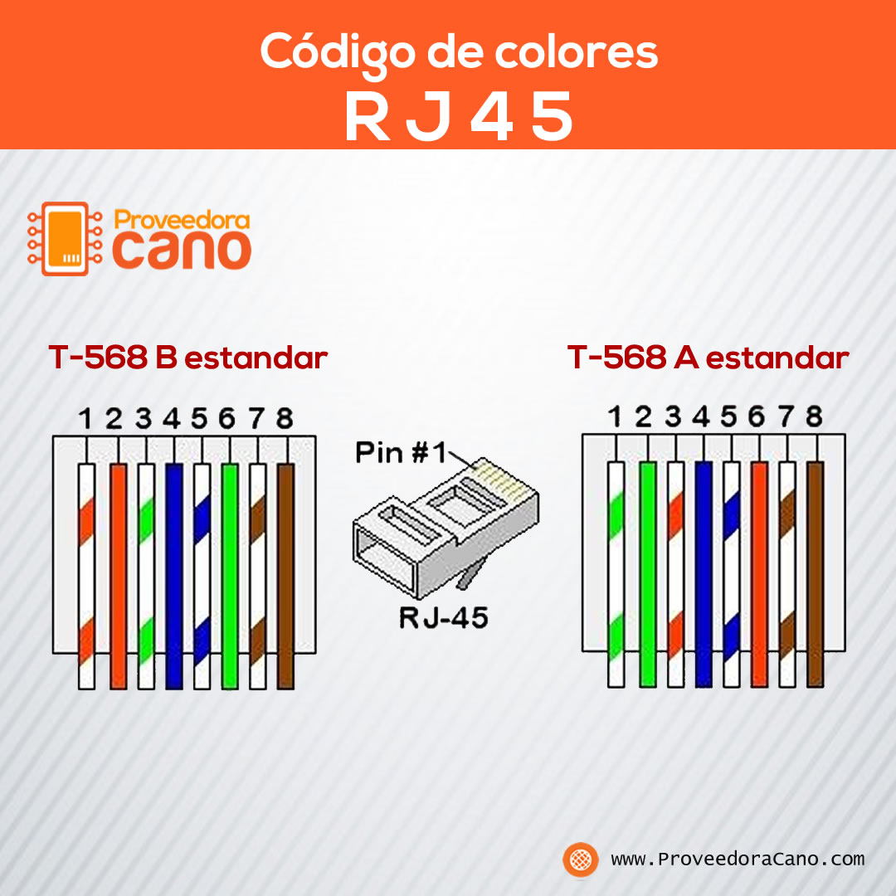

Telecomunicaciones
Son la transmición a distancia de datos de información por medios electronicos y tecnologicos Los datos de informacion son transportados a los circuitos de Telecomunicaciones mediante señales electricas este trabaja sobre peticiones Http por ejemplo Put,Post,Get y Push.
El HTTP o HyperText Transfer Protocol es un protocolo de transferencia sobre el que se basa la red informatica mundial Funciona como base para los intercambios de datos realizados en la web.
El FTP es un Protocolo de transferencia de archivos es un protocolo de red para la transferencia de archivos entre sistemas conectados a una red TCP, basado en la arquitectura cliente-servidor
El TCP/IP es un conjunto constituido por los protocolos de red clave que componen la arquitectura de internet y que permiten la comunicación efectiva y la transmisión de datos entre computadoras
El SMTP o protocolo simple de transferencia de correo es un protocolo de red utilizado para el intercambio de mensajes de correo electrónico entre computadoras u otros dispositivos.
AWS: Amazon Web Services es una coleccion de servicios de computacion en conjunto con la nube publica que lo forma una plataforma de computacion ofrecidas atraves de internet por amazon.com
AZURE:Aplica Modelos de lenguaje y codificacion avanzados simplifica el desarrollo con estaciones de trabajo crear maquinas virtuales para linux y Windows con un servicio a nivel empresarial.
Tipos de conexion de redes en Telecomunicaciones con clable de tipo UTP en cual exiten dos tipos de conexion el cual es el tipo A y el Tipo B en el cual el tipo A su combinacion empieza blanco/naranja,naranja,blanco/verde,azul,azul-blanco,verde,blanco-cafe,cafe mientras el otro se compone de la siguiente combinacion blanco/verde,verde,blanco/naranja,azul,blanco/azul,naranja,blanco/cafe,cafe
Familia de protocolos

Tipos de conexion
Analisis por nodos
Es un metodo de tensiones nodales es un metodo que determina la tencion(diferencia de potencial) de uno o mas nodos.se puede analizar el circuito por las leyes de Kirchhoff se podria usar un analisis de nodos en el que se escribe una ecuacion para cada nodo con la condicion que la suma de las corrientes sea igual a 0.
Un nodo es cualquier punto en un circuito donde se encuentren conectados dos o más componentes para el análisis de cualquier circuito electrónico, las corrientes que «salen» del nodo son positivas, mientras que las que «entran» son negativas..
El primer paso del análisis nodal es seleccionar un nodo como nodo de referencia o de base. El nodo de referencia se llama comúnmente tierra, pues se supone que tiene potencial cero (v=0).
El nodo 0 es el nodo de referencia (v = 0), mientras que a los nodos 1, 2 y 3 se les asignan las tensiones v1, v2 y v3, respectivamente.Téngase en cuenta que las tensiones de los nodos se definen respecto al nodo de referencia. Cada voltaje de nodo es la evaluación de la tensión respecto al nodo de referencia desde el nodo correspondiente.
El siguiente paso se aplica la Ley de Corrientes de Kirchhoff a cada nodo del circuito (excepto al de referencia).
El análisis nodal es resolver el sistema de ecuaciones con las ecuaciones obtenidas de cada nodo. Se aplicó la Ley de Corrientes de Kirchhoff a los n – 1 nodos de no referencia (v1, v2 y v3), y se obtuvieron 3 ecuaciones simultáneas.
Analisis por nodos

Corriente alterna
La corriente alterna (CA) es un tipo de corriente eléctrica, en la que la dirección del flujo de electrones va y viene a intervalos regulares o en ciclos. La corriente que fluye por las líneas eléctricas y la electricidad disponible normalmente en las casas procedente de los enchufes de la pared es corriente alterna.
Este tipo de corriente es la que circula por nuestras redes de distribución. Por el camino, va cambiando de tensión, pasando de la alta tensión, a la media y, posteriormente, a la baja tensión.
Una de las ventajas de la corriente alterna es su relativamente económico cambio de voltaje. Además, la pérdida inevitable de energía al transportar la corriente a largas distancias es mucho menor que con la corriente continua.
Donde mas se utilizan este tipo de corriente alterna es mas en dispositivos electricos un ejemplo claro son los aires acondicionados computadoras telefonos neveras etc.
Corriente alterna

Circuitos RLC
En electrodinámica, un circuito RLC es un circuito lineal que contiene una resistencia eléctrica, una bobina y un capacitor. Existen dos tipos de circuitos RLC, en serie o en paralelo, según la interconexión de los tres tipos de componentes.
Según la Ley de Ohm I=U/R, la Intensidad (Amperios) en igual al Voltaje (Voltios) dividido por la Resistencia (Ohmios).
Resistencias (R) : Son los elementos encargados de ofrecer oposición al paso de la corriente eléctrica. Según la Ley de Ohm I=U/R, la Intensidad (Amperios) en igual al Voltaje (Voltios) dividido por la Resistencia (Ohmios).
Bobinas (L) : Las Bobinas son necesarias para producir campos magnéticos, pero no producen ningún consumo de energía calorífica.
Condensadores (C) : Se trata de elementos capaces de almacenar pequeñas cantidades de energía eléctrica y devolverla al circuito cuando la necesitemos
La impedancia en un circuito o de un componente representa la cantidades de Ohm con el cual se opone a la circulacion de corriente.Es la suma vectorial de la resistencia mas la reactancia; la parte real es la resistencia del circuito y la parte imaginaria la reactancia.
Como saber si es inductivo o capacitivo: Si el angulo de impedancia es positivo se dice que el circuito es inductivo.Si el angulo de impedancia es negativo,Se dice que el circuito es capacitivo